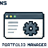
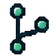
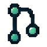
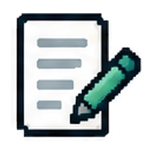
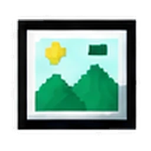
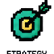
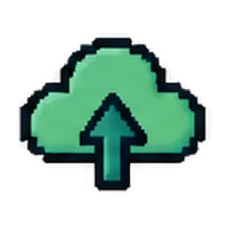
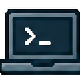

Shared sourceReeder-design
Code, history, branches, and review.
Build + Maintain + Ship
GitHub is where I turn portfolio ideas and learning-tool prototypes into maintainable systems. I use it for version control, structured review, validation, deployment, and the reusable tools that sit behind my public work.
Code, history, branches, and review.

Portfolio Manager
Branch
ReviewWhy GitHub Matters Here
These projects use GitHub to keep design work reviewable, reusable, recoverable, and easier to maintain as the portfolio and toolset grow.
Public-safe content, reusable code, structured project data, documentation, and validation live in versioned repositories instead of disconnected local files.
Development changes move through branches, pull requests, UAT, changed-file overlap checks, and exact-head CI before they reach main.
Approved public work is deployed through GitHub Pages while local-only management tools stay separate from the visitor-facing experience.
GitHub Project Ecosystem
I do not treat each project as a separate endpoint. Source content can become a reusable library asset, a Workbench prototype, a portfolio example, or all three. GitHub keeps the handoffs versioned while the tools support different parts of the lifecycle.
Versioned source of truth
Project Deep Dives
The overview shows the ecosystem. These sections show what each project actually does, why I built it, and how it connects to the rest of the system.
01 · Public Portfolio
The public portfolio is the visitor-facing layer, but the repository also holds the design system, structured content, validation scripts, documentation, reusable assets, and deployment workflow that keep the site maintainable as it grows.

Edit02 · Local Management App
I built the Portfolio Manager so maintaining the site does not require editing raw page code for every routine update. It creates a controlled workspace for content changes, asset references, AI-assisted proposals, Hiring Guide maintenance, validation, and deliberate publishing.
03 · Reusable Content Library
The library gives smaller instructional-design assets a useful home without forcing every experiment, template, interaction, prompt, or code pattern into a full case study. It is designed for reuse, browsing, and continued iteration.



Publish04 · Local Library Maintenance
The Library Manager handles the operational side of the Learning Content Lab. It supports adding and editing items, previewing how they will appear, validating required information, batching changes, and publishing when the content is ready.
05 · Learning Development Prototype
The Workbench explores a more structured way to build learning experiences: start with source content or an existing project, shape it into a reusable structure, edit the experience, preview the learner path, and keep the underlying project data portable for future tools.
How I Ship Changes
Portfolio development and repository infrastructure follow a branch-and-review workflow so visual changes, content changes, and system changes can be tested before merge.
Define the change, affected pages, and intended behavior.
Start from current main and isolate the work.

03BuildEdit the page, system, or tool and keep related changes together.
Open a pull request and complete visual UAT before merge.
Require current main, mergeability, overlap review, and green CI on the exact head.
Merge only after approval, then let GitHub Pages publish the public surface.
What This Demonstrates
I separate visitor-facing experiences from private or local maintenance tools and design each surface around its actual user.
Shared components, structured content, templates, and repeatable workflows reduce one-off rebuilding.
Validation, UAT, source boundaries, and rollback-aware workflows are built into the development process rather than treated as cleanup.
The managers and workbench hide repository mechanics when the real user task is editing content, maintaining a library, or designing learning.
The repositories give me a controlled place to test new interaction patterns, workflow ideas, and learning-development tools without losing earlier working states.